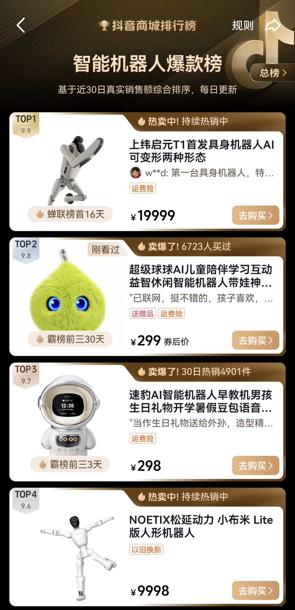
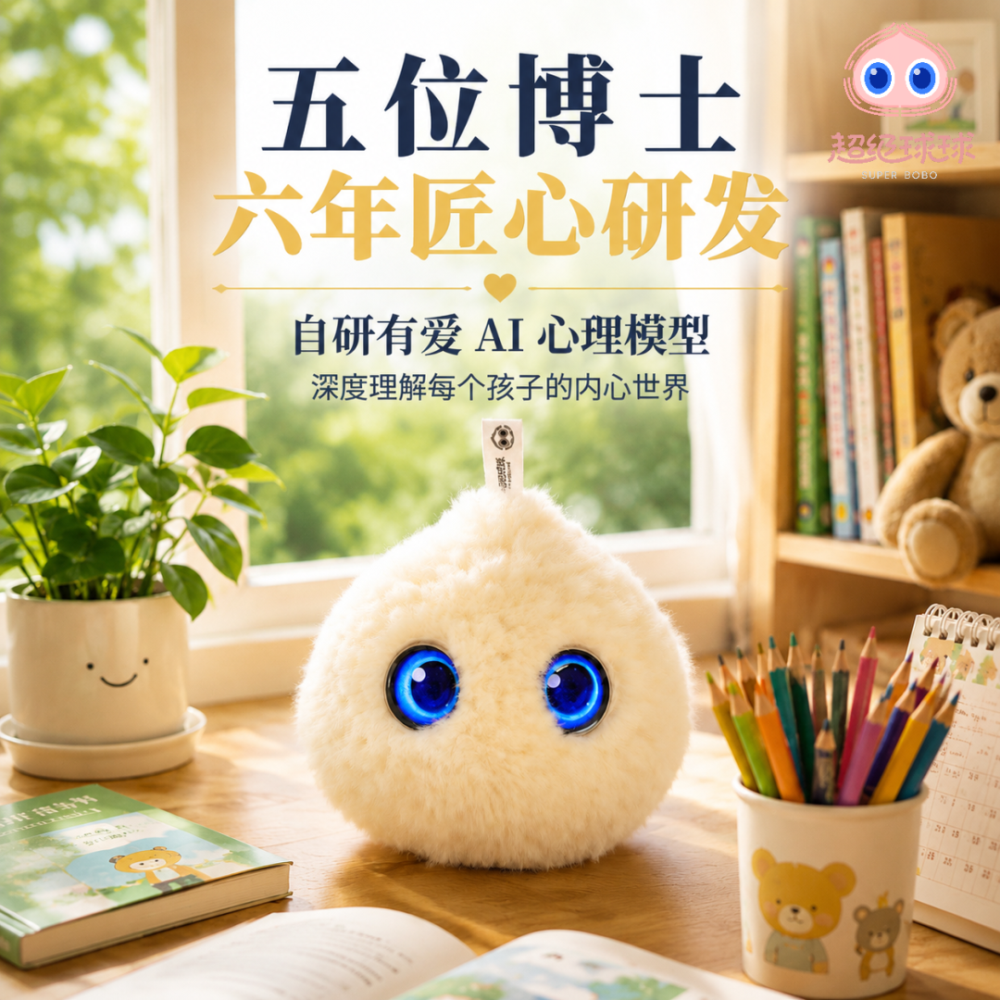
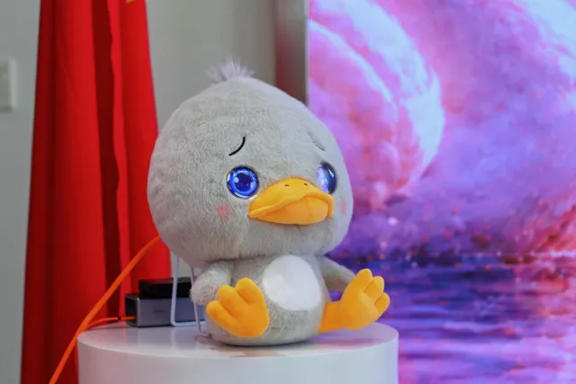
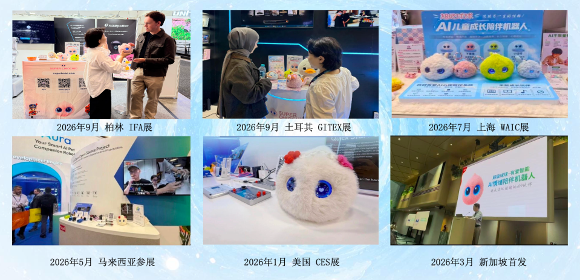
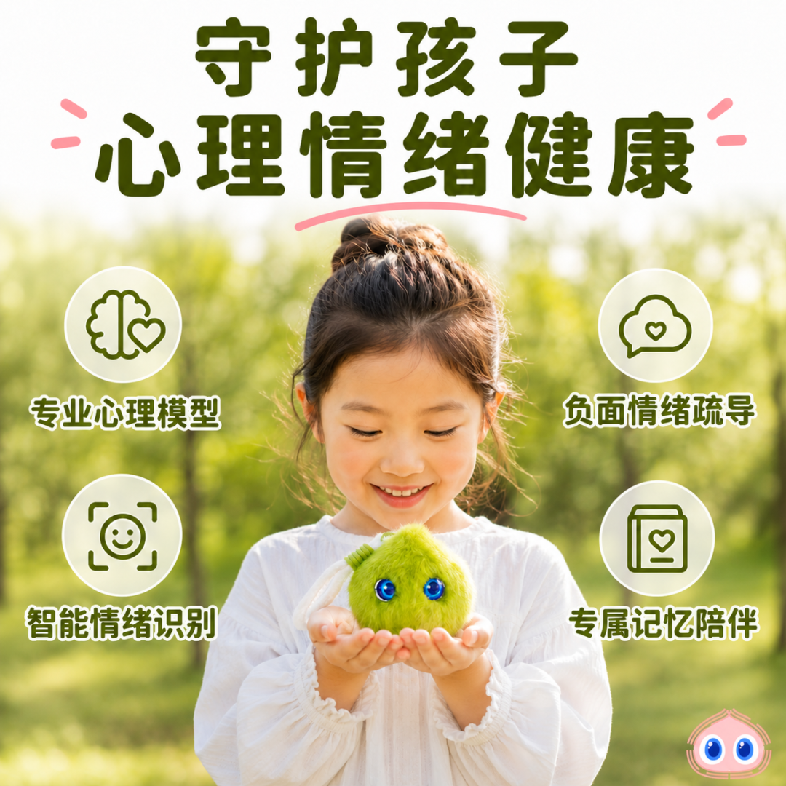
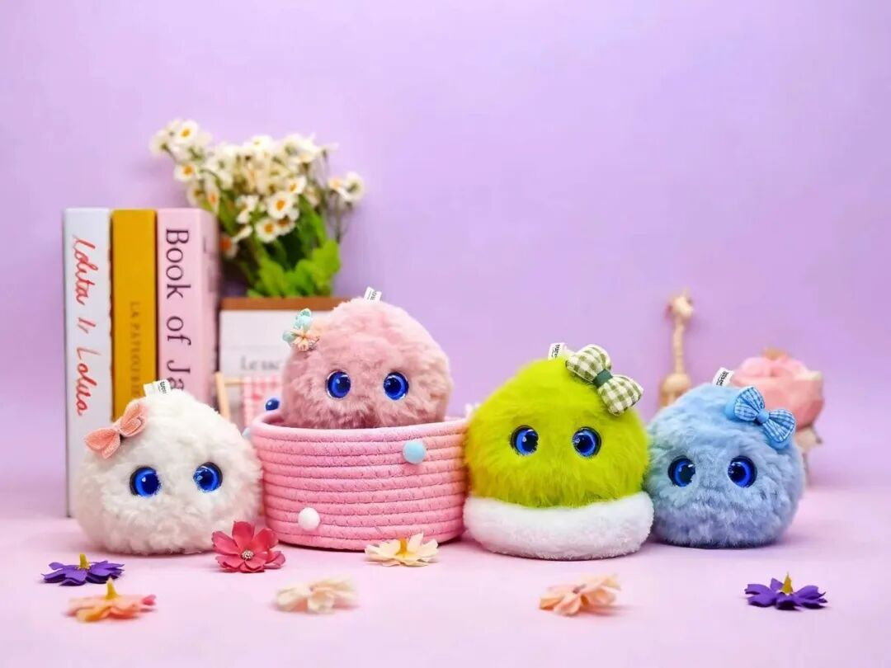

刚刚过去的这个月，抖音电商「智能机器人爆款榜」上，
超级球球 AI 儿童智能陪伴机器人，稳稳坐在了榜单前三的位置，而且这一坐，就是整整30天。
和它同榜竞技的，不乏售价上万元的人形机器人、仿生机器人。超级球球硬是凭着实力在高手如云的赛道里，拿下了霸榜前三的好成绩！
01 榜单实况：连续30天，超级球球第一第二轮流坐
先看成绩。在抖音电商「智能机器人爆款榜」上，超级球球 AI 儿童成长陪伴机器人：

要知道，爆款榜不是"曝光榜"，也不是花钱就能买的广告位。它看的是真实成交、真实热度与真实口碑，每天动态更新，冲上去容易，守住难。
能在榜单前三待满整整一个月，意味着在这30天里，超级球球一直在被真实用户下单、反复推荐。这份成绩单，是用真金白银和真实好评投出来的。
对一家成立仅一年的、只做了一件事——把 AI 陪伴做进一颗球里的品牌来说，这就是最好的市场回应。
02 超级球球的出身：一家成立仅一年多的杭州AI公司
这份成绩不是偶然。超级球球的研发方，一家位于杭州余杭、专注情感AI，AI在情绪陪伴领域的科创企业。
有爱智能成立于 2025 年 7 月，算下来至今不过一年多，团队不大，方向却始终只有一个。
不把 AI 当卖点，而是真的用它去回应孩子的情绪——这是超级球球和市面上多数"会说话的玩具"的最根本分野。

03 见过世面：球球的舞台不止直播间
超级球球不是一颗只在直播间里被看见的球。
2026 年 9 月，超级球球带着与丹麦经典 IP「安徒生」联名的系列产品丑小鸭，站上了德国柏林国际消费电子展（IFA）的展台。IFA 是全球规模最大、影响力最强的消费电子展之一，2026 年吸引了来自 155 个国家和地区的 约24 万名观众、超过 2000 家品牌参展。超级球球亮相于 IFA NEXT 创新展区的 25 号馆——那也是当年人形机器人最集中的场馆。

而就在一周前，这套安徒生联名系列才刚在丹麦王国驻上海总领事馆完成全球首发。从上海到柏林，只隔了不到一周。
安徒生系列首发发布会上，超级球球与中国移动芯昇科技、涂鸦智能、ClassOver、Redfunplanet 等企业达成战略合作，把安徒生童话里"丑小鸭"的成长故事，真正做成了能陪孩子说话的 AI 伙伴。
一部两百多年的童话，遇上中国 AI —— 这件事本身，就是中国智能硬件走向全球的一个注脚。
再往前看，球球走的每一步，都在被更多人看见：

04 产品力：超级球球不做"带屏早教机"，它做"心灵伙伴"
榜单不会说谎，但比榜单更能说明问题的是：为什么家长愿意复购、愿意推荐？
它没有屏幕。与市面上主流的带屏早教机不同，超级球球走的是无屏幕轻量化路线——纯语音交互、亲肤环保毛绒面料，从根源上规避蓝光对视力的损伤，也解决了家长"怕孩子沉迷电子产品"的焦虑。
它有情绪。动态眼神交互、触摸感应反馈，捏一捏有回应，抱一抱有反应。基于心理学构建的 AI 情绪疗愈模型，能倾听、共情、疏导、正向引导——这是"聊天"和"陪伴"的分界线。
它记得住。依托长期记忆，球球会记住孩子的性格、喜好与心事，给出个性化引导。相处越久，它越懂这个孩子。
它教得会。分龄故事、英语口语陪练、科普知识、助眠轻音乐，围绕专注力、情绪力、抗挫力、表达力四种成长能力陪孩子练习。

05 写在最后：前三坐满了30天
把博士团队的算法沉淀、多项情感交互专利、硬件与云端的成熟供应链、上百个家庭的数据——全部装进一颗超级球球里，这才是超级球球能霸榜30天的真正原因。
它不是靠一波投放冲上去的短期爆量，而是经过整整一个月的用户真金白银投票和口碑验证后，依然稳居前列。
送孩子一生好性格，从一颗超级球球开始。
